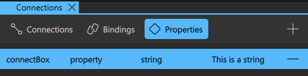

Creating Component Instances
Qt Design Studio comes with preset components that you can use in your UI by creating instances of them.
To create component instances and edit their properties:
- Drag-and-drop components from Components (1) to the Navigator (2), 2D (3), or 3D view (4). This creates instances of the components in the current component file.
- Select component instances in Navigator to edit the values of their properties in Properties.
For more information, see Specifying Component Properties.
- To change the appearance and behavior of the component instances in ways that are not supported in Qt Design Studio by default, you can define custom properties on the Properties tab in the Connections view.

For more information, see Specifying Custom Properties.
- To enable users to interact with the component instances, connect the instances to signals on the Connections tab in the Connections view. For example, you can specify what happens when a component instance is clicked. For more information, see Connecting Components to Signals.

- To dynamically change the behavior of a component instance when another component instance changes, create bindings between them on the Bindings tab in the Connections view. For more information, see Adding Bindings Between Properties.

- Add states to apply sets of changes to the property values of one or several component instances in the States view. For more information, see Working with States.
- Animate the properties of component instances in the Timeline view. For more information, see Creating Timeline Animations.